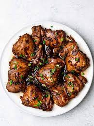

Chicken Adobo Dish
Home Page

Filipino Chicken Adobo Recipe
Chicken Adobo is an authentic Filipino dish and is one of the mostly recognized Filipino foods. Not to be mistaken with Mexican adobo, this dish is uniquely prepared by stewing chicken in vinegar and soy sauce.
Several sources who are experts in Asian food history say that the Filipinos were already cooking adobo even before Spanish colonization. According to them, cooking with vinegar preserves the meat. This method is also considered as one of the earliest food preservation practice.
The Ingredients
- 2 lbs chicken (note 1)
- 3 pieces dried bay leaves (note 2)
- 8 tablespoons soy sauce (note 3)
- 4 tablespoons white vinegar (note 4)
- 5 cloves garlic (note 5)
- 1 1/2 cups water
- 3 tablespoons cooking oil
- 1 teaspoon sugar (note 6)
- 1/4 teaspoon salt (note 7)
- 1 teaspoon whole peppercorn (note 8)
Step-by-step instructions
- Combine chicken, soy sauce, and garlic in a large bowl. Mix well. Marinate the chicken for at least 1 hour. Note: the longer the time, the better 2 lbs chicken, 8 tablespoons soy sauce
- Heat a cooking pot. Pour cooking oil. 3 tablespoons cooking oil
- When the oil is hot enough, pan-fry the marinated chicken for 2 minutes per side.
- Pour-in the remaining marinade, including garlic. Add water. Bring to a boil 1 1/2 cups water
- Add dried bay leaves and whole peppercorn. Simmer for 30 minutes or until the chicken gets tender 3 pieces dried bay leaves, 1 teaspoon whole peppercorn
- Add vinegar. Stir and cook for 10 minutes. 4 tablespoons white vinegar
- Put-in the sugar, and salt. Stir and turn the heat off.Serve hot. Share and Enjoy! 1 teaspoon sugar, 1/4 teaspoon salt
Notes
- Chicken: slice the chicken into serving pieces before cooking. The cuts are usually smaller. For example, a regular piece of chicken breast can be divided into 2 to 3 pieces depending on your preference.
- Bay leaves:This is an essential ingredient for Filipino adobo as far as I am concerned. Dried bay leaves (locally called “dahon ng laurel”) are usually used because of it is available year round. It can also be stored longer in room temperature. However, fresh bay leaves can also be utilized for this recipe.
- Soy sauce:I personally prefer Filipino brand soy sauce in making adobo. I have nothing against Kikkoman and other Asian brands, but the dish will taste more authentic if local soy sauce is used.
- Vinegar:White vinegar is the most common type to use for adobo. Sometimes I use cane or rice vinegar too.
- Garlic:Adobo should be garlicy. The garlic can be sauteed and boiled just like in this recipe, or it can be toasted. I toast this by browning the crushed garlic in oil before adding the chicken. Sometimes I make extra toasted garlic so that I have more for garnish later on.
- Sugar:this is an optional ingredient. Sugar is added to balance the saltiness of the dish. You can add more too if you want your chicken adobo to be on the sweet side.
- Salt:This is optional because the soy sauce is already salty to begin with. I only add salt when needed, which is not usual.
- Peppercorn:It does not matter if it is is whole, crushed, or ground. Whole peppercorn has just been used traditionally.